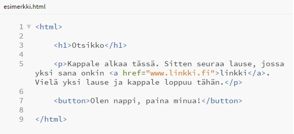
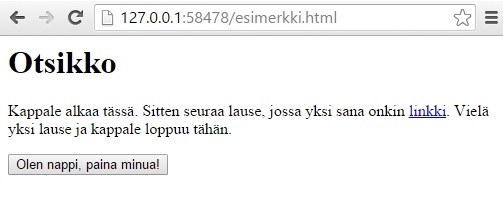
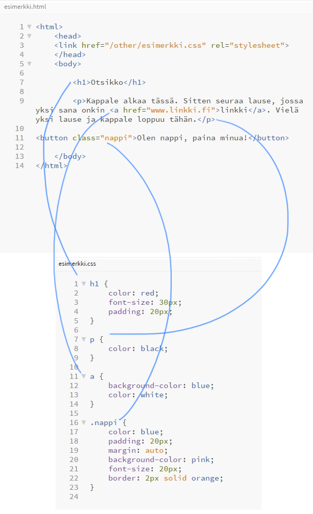
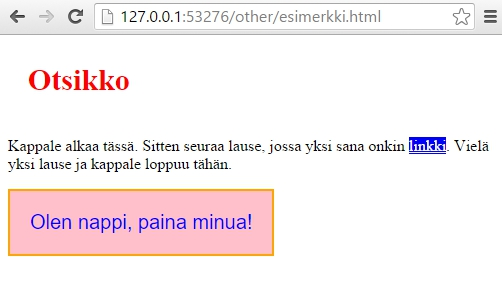

Suoraan asiaan.
HTML on merkintäkieli, joka kertoo selaimelle mitä sivulla on. HTML voi sanoa selaimelle "Tämä on otsikko!" tai "Tämä on kappale!" tai vaikkapa "Tämä on linkki". Vaikkei se osaa sanoa mitään muuta kuin "Tämä on...", vaihtoehtoja mitä tämä on on valtavasti.
Alla olevassa kuvassa HTML sanoo "Tämä on otsikko (h1), tämä on kappale (p), jonka sisällä on linkki (a), joka vie osoitteeseen www.linkki.fi, tämä on nappi (button)."
Kun selain on kuunnellut kaikki HTML:n ohjeet, se näyttää ne selaimen käyttäjälle erittäin yksinkertaisessa muodossa.
Puhdas HTLM näyttää selaimessa tältä:
Kuten näette, pelkällä HTML:llä ei pitkälle päästä. Avuksi tarvitaan tyyliohjeiden kieli CSS, joka on jo paljon monipuolisempi. (Kummatkaan HTML eikä CSS eivät ole "oikeita" ohjelmointikieliä, mutta CSS on niin kehittynyt, että sillä voi tehdä monia asioita, joihin ennen tarvittiin niitä "oikeita" ohjelmointikieliä.)
Kuten nimestäkin näkyy (tyyliohjeiden kieli), CSS antaa selaimelle ohjeita, miltä HTLM pitäisi näyttää. Se voi sanoa jotain seuraavan tapaista: "Otsikko on punainen, sen koko on 30 pikseliä, ja sen ympärillä pitää olla 20 pikseliä tilaa. Kappaleet ovat mustalla tekstillä. Linkkien pohjaväri on sininen ja teksti valkoinen."
CSS:llä on valtava sanavarasto. Se voi sanoa mitä vain. Jopa ammattilaiset tuskin tietävät kaikkia sen mahdollisuuksia.
CSS ja HTML ovat yhteydessä "silloilla", joita kutsutaan selektoreiksi (engl. select). Ne siis valitsevat tiettyjä kohteita. Selektoreja on paljon erilaisia ja ne voivat olla erittäin monimutkaisia. Joku voi esimerkiksi tarkoittaa "jos siirrät kursorin X:n, joka on Y:n sisällä päälle, tee jotain".
Alla olevasta kuvasta näkyy, miten CSS toimii yksinkertaisuudessaan. Ensin seuraa "silta" ja sitten ohjeet valituille kohteille.
Ja tältä meidän sivusto nyt näyttää:
Ei kovinkaan kaunis, mutta toivottavasti ymmärrätte nyt, mistä on kyse ja voimme siirtyä takaisin kuvisdiplomi-asiaan.